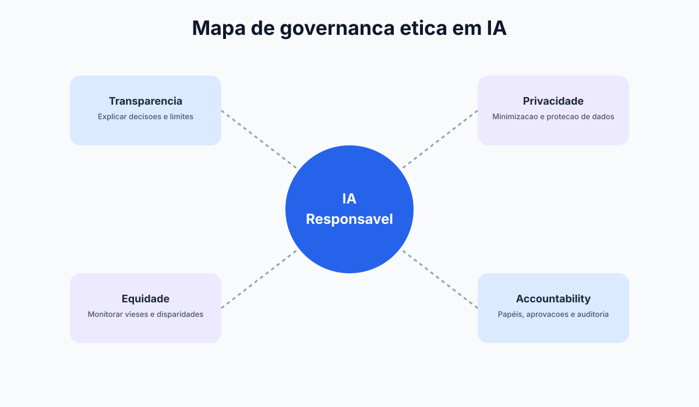
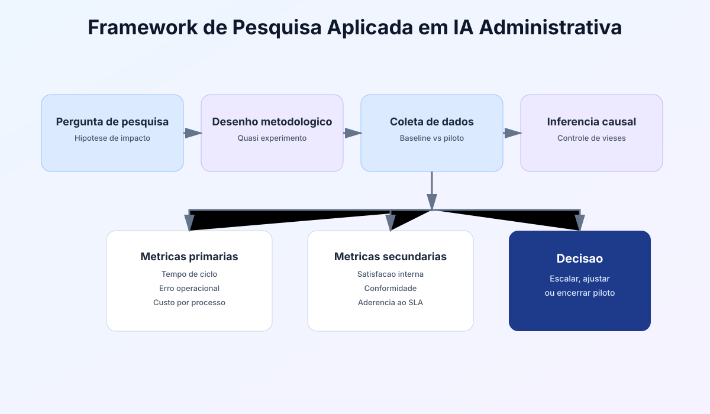
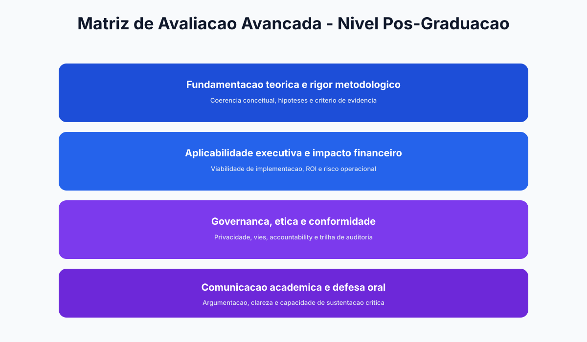
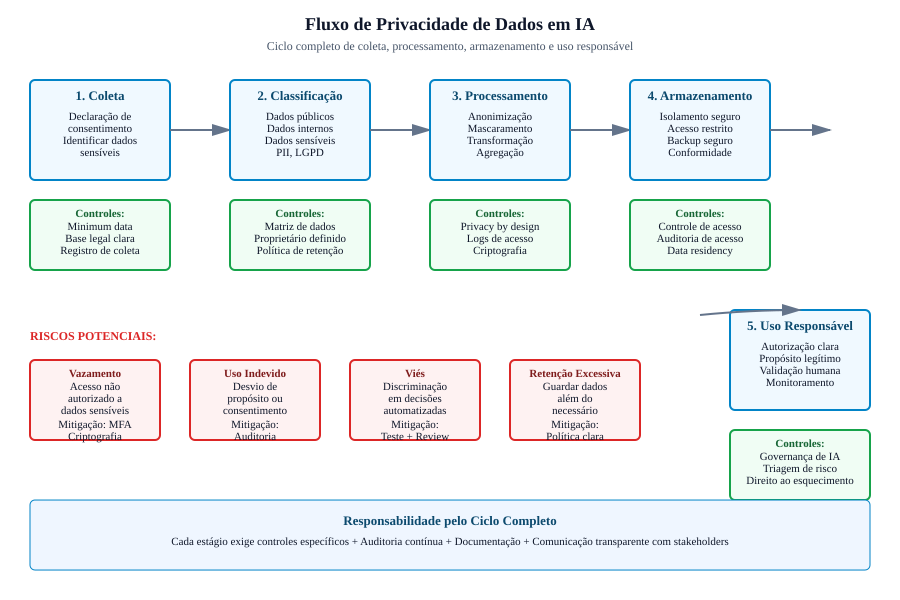
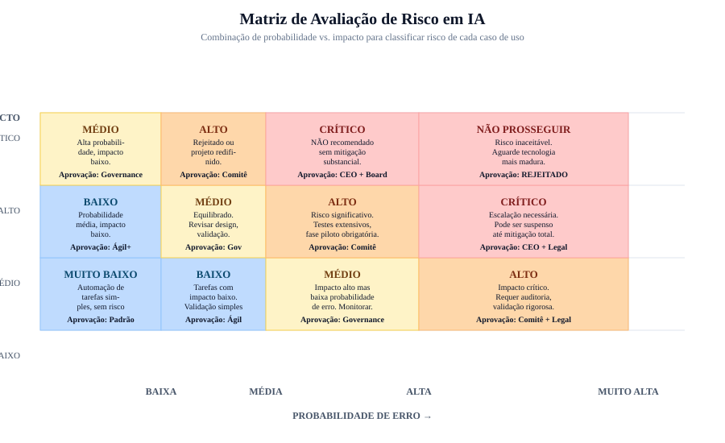

Conformidade
Classifique dados e reduza exposição legal.
Módulo 5
Adotar IA sem governança pode gerar riscos legais, operacionais e reputacionais. Este módulo mostra como implementar IA com responsabilidade e segurança.
Por que esta imagem? A abertura reforça o tema central do módulo: governança, proteção de dados e decisões responsáveis em IA.
Classifique dados e reduza exposição legal.
Política, comitê e auditoria recorrente.
Planos para viés, vazamento e alucinação.



Dados pessoais e sensíveis exigem classificação, controle de acesso e base legal de uso. O princípio mínimo é: usar apenas o dado necessário.
Modelos podem reproduzir injustiças presentes em dados históricos. É necessário revisar amostras, critérios e impactos por grupo.
IA pode errar, inventar fatos e interpretar contexto de forma incompleta. Por isso, decisões críticas devem ter validação humana obrigatória.
Sistema didático do módulo
Resumo
IA responsável exige política clara, classificação de dados e definição objetiva de responsabilidade por decisão.
Exemplo real
Grande parte dos incidentes ocorre por uso indevido de dados em prompts sem revisão e sem trilha de auditoria.
Prompt pronto
Use os prompts para gerar minuta de política, matriz de risco e ritual do comitê de IA em formato executável.
Atenção
Resultado aparentemente correto pode ocultar viés ou alucinação; casos críticos devem manter revisão humana mandatória.
| Risco | Exemplo | Impacto | Mitigação recomendada |
|---|---|---|---|
| Vazamento de dados | Envio de base com dados sensíveis para ferramenta externa | Alto | Anonimização, política de uso e bloqueio de campos críticos |
| Decisão enviesada | Ranqueamento injusto em triagem de candidatos | Alto | Auditoria de critérios e revisão humana |
| Alucinação de conteúdo | Relatório com informação não verificada | Médio | Checagem de fontes e validação por especialista |
| Dependência excessiva | Equipe para de analisar criticamente as saídas | Médio | Treinamento contínuo e checklist de revisão |
Governança não é apenas um documento. É um sistema de controles permanentes que define o que pode ser feito, por quem, com qual dado e com qual evidência de revisão.
Separe dados públicos, internos, sensíveis e críticos. Cada categoria deve ter regra específica de uso em ferramentas de IA.
Liste casos autorizados e proibidos por área. Isso evita uso improvisado em processos com alto risco legal ou reputacional.
Defina níveis de revisão conforme impacto da decisão. Quanto maior o dano potencial, maior a exigência de validação formal.
Registre prompts usados, dados consultados, saída gerada e decisão final tomada. Sem trilha, não há governança defensável.
Acompanhe métricas de disparidade entre grupos e revise periodicamente critérios para impedir discriminação algorítmica.
Estabeleça protocolo de contenção, comunicação e correção quando houver vazamento, decisão indevida ou erro crítico da IA.



Prompt para criar política de uso responsável
Atue como especialista em governança de IA. Crie uma política corporativa de uso de IA para uma empresa de [setor] com [porte]. Inclua: - Objetivos da política - Regras de uso de dados - Casos de uso permitidos e proibidos - Necessidade de revisão humana - Procedimento para incidentes
Uma empresa automatizou triagem de candidatos sem revisão de critérios e percebeu queda de diversidade nas contratações. Após auditoria, ajustou variáveis e incluiu revisão humana em etapas sensíveis.
Estrutura de governança para uso responsável de IA em ambientes corporativos.
Política de uso, classificação de dados e responsabilidades internas.
Carga: 2h
Métodos para monitorar injustiça algorítmica e reduzir danos.
Carga: 2h
Checklist de auditoria, trilhas de decisão e gestão de incidentes.
Carga: 2h
Construção colaborativa de política mínima de IA para a empresa.
Carga: 2h
Aplicacao pratica para transformar teoria de Modulo 5 em ganho operacional mensuravel.
Mapeie o fluxo atual de controle de risco no uso de IA e identifique gargalos de tempo, custo e retrabalho.
Evidencia: mapa AS-IS com 3 gargalos priorizados.
Desenhe um piloto de 2 semanas para etica, privacidade e compliance, com escopo controlado e checkpoints diarios.
Evidencia: plano de execucao com dono, prazo e criterio de parada.
Defina baseline e metas para incidentes evitados, comparando antes vs depois com o mesmo periodo.
Evidencia: painel simples com 3 KPIs e tendencia semanal.
Implemente regras de revisao humana, classificacao de dados e trilha de auditoria das decisoes.
Evidencia: checklist de risco com responsaveis e frequencia de revisao.
Planeje extensao para um segundo processo mantendo qualidade, custo sob controle e aprendizagem da equipe.
Evidencia: roadmap 30-60-90 dias com marco de escala.
Prompts curados para acelerar analise, decisao e implantacao com foco em Modulo 5.
Prompt 1: Diagnostico executivo
Atue como consultor de etica, privacidade e compliance. Faça um diagnostico rapido do processo [controle de risco no uso de IA] com 5 gargalos, impacto estimado e prioridade de ataque.
Prompt 2: Plano 30-60-90
Monte um plano 30-60-90 dias para implementar IA em [controle de risco no uso de IA] incluindo objetivos, entregas por fase, donos e riscos.
Prompt 3: KPIs e baseline
Defina um modelo de medicao para [incidentes evitados] com baseline, meta trimestral, formula e frequencia de acompanhamento.
Prompt 4: Governanca minima
Crie uma politica minima de uso de IA para este contexto com regras de dados, revisao humana, aprovacao e auditoria.
Prompt 5: Escala com controle
Proponha como escalar o piloto para outra area sem perder qualidade, informando criterios de readiness e plano de capacitacao.
Use estes prompts para estruturar controles, política de IA e mitigação de riscos éticos e legais.
Prompt: Audit de conformidade: quais riscos de IA tem sua operação?
Estou usando IA em [seu processo] e preciso entender riscos de conformidade. Analise: PARA MEU CENÁRIO: 1. Que tipo de dados estou usando? (pessoais, financeiros, saúde, etc?) 2. Qual lei se aplica? (LGPD, Lei Geral de Proteção de Dados, GDPR, etc?) 3. Há discriminação de grupo potencial? (idade, gênero, raça, regional?) 4. De quem é a responsabilidade se der errado? (minha, da ferramenta, compartilhada?) 5. Qual é o direito do cliente/pessoa (explicação, objeção, correção)? MATRIZ DE RISCO: - Risco legal: [alto/médio/baixo] - por quê? - Risco operacional: [alto/médio/baixo] - por quê? - Risco reputacional: [alto/médio/baixo] - um erro pode viralizar? AÇÕES DE MITIGAÇÃO: 1. [ação] 2. [ação] 3. [ação] Próximo passo: enviar para jurídico? Documentar política?
Prompt: Estruturar Comitê de IA com responsáveis por aprovação, risco e inovação
Preciso formalizar o "Comitê de IA" da minha empresa para decentralizar decisões e reduzir risco. Monte estrutura com: COMPOSIÇÃO: - Patrocinador (faz parte da liderança? Qual cargo mín?) - Especialista em dados/IA (quem?) - Representante de Risco/Compliance (quem?) - Proprietário de negócio (qual área prioriza?) - Stakeholder usuário (equipe que usa?) CHARTER (O que o comitê faz?): 1. Aprova propostas de IA (escopo, risco, orçamento) 2. Monitora projetos em andamento (KPI, desvios) 3. Escalada de risco (quando pausar/parar?) 4. Aprendizado e melhoria (o que deu certo? E errado?) 5. Comunicação (como informar empresa sobre IA?) CADÊNCIA: - Reunião de aprovação: [quinzenal/mensal?] - Reunião de monitoramento: [semanal/mensal?] - Revisão de risco: [trimestral?] DOCUMENTAÇÃO: - Ata com decisões e donos - Registro de riscos identificados (log vivo) - Matriz de aprovação (sim/não/sim com condições)
Prompt: Política de IA corporativa (o que vale, o que não vale, o que monitora)
Monte uma Política de IA corporativa mínima (1-2 páginas) com as regras que TODOS precisam seguir: PROIBIÇÕES (NUNCA fazer): 1. Enviar dados pessoais [quais?] para ferramentas públicas (ChatGPT, etc) 2. Usar IA para [decisões sensíveis: demissão, crédito, contratação?] 3. [Outras regras específicas da sua empresa] OBRIGAÇÕES (SEMPRE fazer): 1. Documentar qual IA foi usada e para qual caso 2. Validar output antes de usar (spot-check de qualidade) 3. Reportar erro imediatamente (quem avisar?) 4. Pedir aprovação para [quais casos?] MONITORAMENTO (Como verificar que as regras funcionam?): 1. Audit mensal de ferramentas usadas 2. Quiz trimestral de conhecimento 3. Incidente/erro requerido ser escalado (log) PENALIDADE (O que acontece se quebrar regra?): - Aviso - Retreinamento - Ação disciplinar (em caso grave) Distribuição: enviar por quem? Com signature de recebimento?